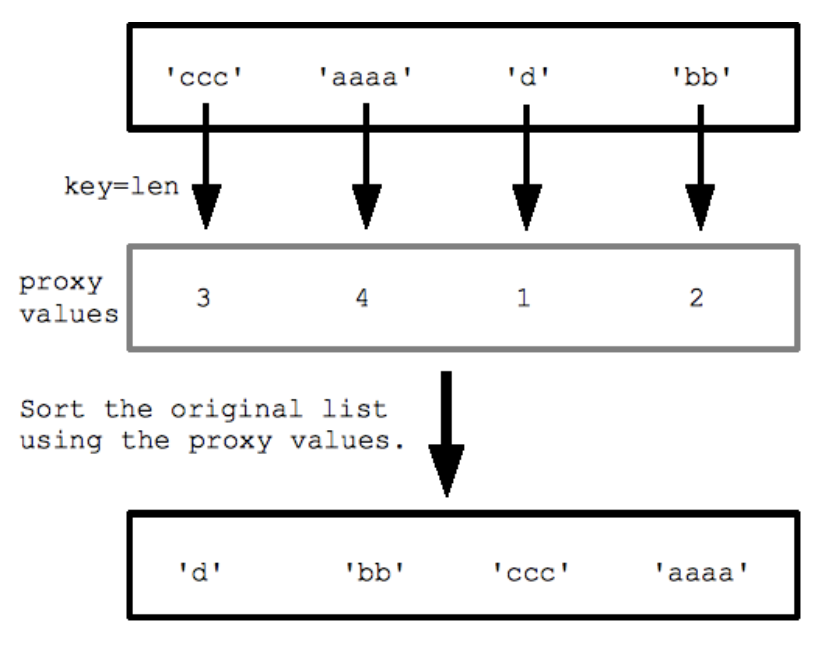

Teaching notes from today
List Comprehensions
[ ]:
[x for x in [1, 2, 3, 4]]
[1, 2, 3, 4]
Et for loop der skrives som dette:
[ ]:
l = []
for i in range(1, 10):
l.append(i)
l
[1, 2, 3, 4, 5, 6, 7, 8, 9]
Kunne skrives mere elegangt med en list comprehension
[ ]:
[i for i in range(1, 10)]
[1, 2, 3, 4, 5, 6, 7, 8, 9]
STUDENTS 10 MINUTES TASK
(Ex 1: Alphabet List Comprehensions)
Create a list of capital letters in the english alphabet
Create a list of capital letter from the english aplhabet, but exclude 4 with the Unicode code point of either 70, 75, 80, 85.
Create a list of capital letter from from the english aplhabet, but exclude every second between F & O
if, else
if
[ ]:
[x for x in range(1, 10) if x%2 == 0]
[2, 4, 6, 8]
else
[ ]:
[x if x%2 == 0 else 'un-even' for x in range(1, 10)]
['un-even', 2, 'un-even', 4, 'un-even', 6, 'un-even', 8, 'un-even']
Nested for loops
Like you can do a nested for loop
[ ]:
l = []
for i in range(3):
for j in range(2):
l.append((i, j))
l
[(0, 0), (0, 1), (1, 0), (1, 1), (2, 0), (2, 1)]
You can create nested list comprehensions
[ ]:
[(i,j) for i in range(3) for j in range(2)]
[(0, 0), (0, 1), (1, 0), (1, 1), (2, 0), (2, 1)]
STUDENTS 10 MINUTES TASK
Ex 2: Clothes List Comprehension
From 2 lists, using a list comprehension, create a list containing:
[ ]:
[('Black', 's'), ('Black', 'm'), ('Black', 'l'), ('Black', 'xl'), ('White', 's'), ('White', 'm'), ('White', 'l'), ('White', 'xl')]
[('Black', 's'),
('Black', 'm'),
('Black', 'l'),
('Black', 'xl'),
('White', 's'),
('White', 'm'),
('White', 'l'),
('White', 'xl')]
[ ]:
colors = ['Black', 'White']
sizes = ['s', 'm', 'l', 'xl']
If the tuple pair is in the following list, it should not be added to the comprehension generated list.
[ ]:
sold_out = [('Black', 's'),('White', 'l')]
Python One-Liners
Python is known for its capability to express complex operations in concise one-liners, often making use of features like comprehensions, lambda functions, and ternary operators. Here are several examples of Python one-liners that utilize various features of the language:
[33]:
age = 14
x = 4
a = 'a'
b = 'b'
1. Filtering a List
Using a list comprehension to filter elements.
[17]:
numbers = [1, 5, 9, 10, 100, 200, 300, 400, 500]
[18]:
filtered = [x for x in numbers if x > 10]
filtered
[18]:
[100, 200, 300, 400, 500]
2. Mapping Over a List
Applying a function to each element in a list.
[15]:
numbers = [1, 5, 9, 10, 100, 200, 300, 400, 500]
[16]:
squared = [x**2 for x in numbers]
squared
[16]:
[1, 25, 81, 100, 10000, 40000, 90000, 160000, 250000]
3. Joining a List of Strings
Concatenating a list of strings into a single string.
[ ]:
strings = ['Hello', 'world', 'Claus', 'is', 'my', 'name']
[11]:
joined_string = ' '.join(strings)
joined_string
[11]:
'Hello world Claus is my name'
5. Set Comprehension
Creating a set with a comprehension.
[13]:
strings = ['Hello', 'world', 'Claus', 'is', 'my', 'name']
[14]:
unique_lengths = {len(s) for s in strings}
unique_lengths
[14]:
{2, 4, 5}
6. Dictionary Comprehension
Creating a dictionary from two lists.
[10]:
keys = ['name', 'age', 'gender']
values = ('Claus', 50, 'male')
[12]:
my_dict = {key: value for key, value in zip(keys, values)}
my_dict
[12]:
{'name': 'Claus', 'age': 50, 'gender': 'male'}
7. Function Definition
Defining a simple function in one line.
[21]:
y = 14
x = 4
[22]:
add = lambda x, y: x + y
8. Generator Expression
Using a generator for memory-efficient looping.
[29]:
sum_of_squares = sum(x**2 for x in numbers)
sum_of_squares
[29]:
550207
9. Chaining Comparison Operators
Checking multiple conditions.
[28]:
in_range = 1 <= x <= 10
in_range
[28]:
True
10. Conditional Variable Assignment
Using a ternary operator for conditional assignment.
[26]:
age = 14
[27]:
status = 'Adult' if age >= 18 else 'Child'
status
[27]:
'Child'
11. Swapping Variables
Swapping the values of two variables.
[23]:
a = 'a'
b = 'b'
[24]:
a, b = b, a
a, b
[24]:
('b', 'a')
12. List Slicing
Reversing a list with slicing.
[35]:
reversed_list = numbers[::-1]
reversed_list
[35]:
[500, 400, 300, 200, 100, 10, 9, 5, 1]
Sorting
sorted()
[2]:
a = [3, 6, 1, 2, 9, 3, 5]
sorted(a)
[2]:
[1, 2, 3, 3, 5, 6, 9]
[3]:
a
[3]:
[3, 6, 1, 2, 9, 3, 5]
Returns a sorted list. Does not change the original.
Parameters
[4]:
# sorted(e, reverse= True/False, key=func)
[5]:
a = ['Hans', 'Alice', 'Bob', 'Esmarada', 'Hans Jørgen', 'Arne']
sorted(a, key=len)
[5]:
['Bob', 'Hans', 'Arne', 'Alice', 'Esmarada', 'Hans Jørgen']

Key functions
Sort by name with 5 or more letters.
[6]:
def five_or_more(x):
if len(x) >= 5:
return False
return True
[8]:
sorted(a, key=five_or_more)
[8]:
['Alice', 'Esmarada', 'Hans Jørgen', 'Hans', 'Bob', 'Arne']
sorted() with lambda
[9]:
sorted(a, key=lambda x: x[-1])
[9]:
['Esmarada', 'Bob', 'Alice', 'Arne', 'Hans Jørgen', 'Hans']
[ ]: